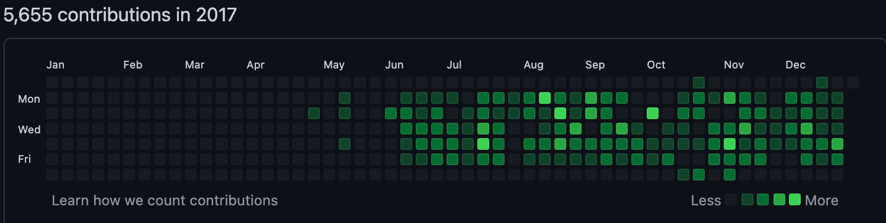
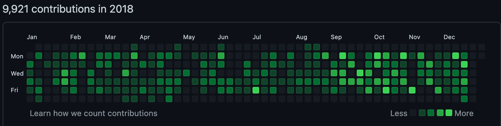
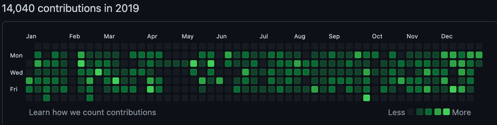
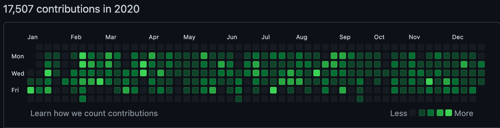
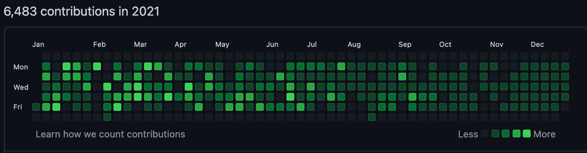

<div class="card mb-5 mb-xl-10">
    <div class="card-header cursor-pointer">
        <div class="card-title m-0">
            <span class="fs-2 fw-bold text-gray-700 m-0">總覽</span>
        </div>
    </div>
    <div class="card-body">
        
        <h3 class="fw-bold mb-5">對於公司而言</h3>
        <div class="fs-5 lh-lg ls-1 text-gray-800 mb-6">
            入職至今即將邁入第五年，中間開發了大大小小的功能、維護了許多系統、推進了很多專案。剛好看到Github有個特別的統計數據，拿出來獻醜一下。
        </div>
        
        
        
        
        
        <div class="fs-5 lh-lg ls-1 text-gray-800 mb-6">
            對於Git有一定的理解，也有使用GitHub規劃適合我們的CI/CD架構。雖然還有不足的地方，但是透過遇到的問題，也能運用工具找到更好的作法。
        </div>
        <div class="fs-5 lh-lg ls-1 text-gray-800 mb-6">
            沒有最好的作法，只有更好的辦法。
        </div>
    </div>
</div>